| 日付 | 2023年1月8日（日） |
|---|---|
| 山域 | 安蘇山塊 |
| メンバー | 家族（妻、長男・9歳） |
| 山行形態 | 子連れ日帰り |
| アクセス | 車 |
| ルート (Map) | 太田市営駐車場 (8:34) - (9:05) 展望台 - (9:32) 物見台 - (9:54) 太田金山 - (10:33) P184 - (11:03) 太田金山 (11:44) - (11:57) 松風峠 - (12:53) 受楽寺 - (13:28) 太田市営駐車場 |
2023年の初登り。
妻が足を痛めていて、そのリハビリ登山のため極力軽めの山に。
群馬県まで足を延ばして、低山の太田金山に登ることにする。
登山道がたくさんあり、様々なルートが取れる山だ。
太田市営無料駐車場に車を停める。標高50m。
この辺りは寺院がたくさんあり、駐車場が多くて助かる。
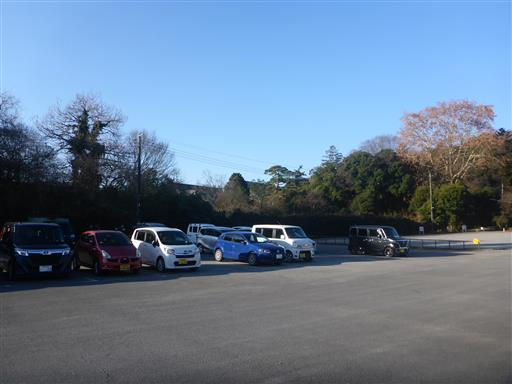
準備を整えて登山開始。道は非常によく整備されている。
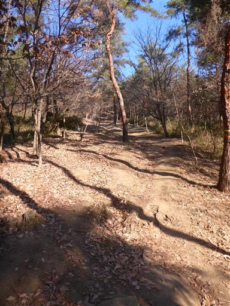
東屋を通過。周囲を歩いている人は多い。
地元民に人気の山なのだろう。
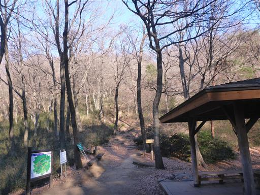
息子は杖を一本借りてご満悦。
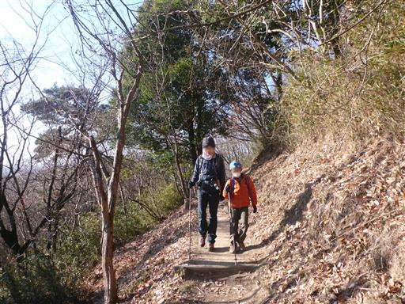
ずらっと並ぶ階段。長くは続かない。
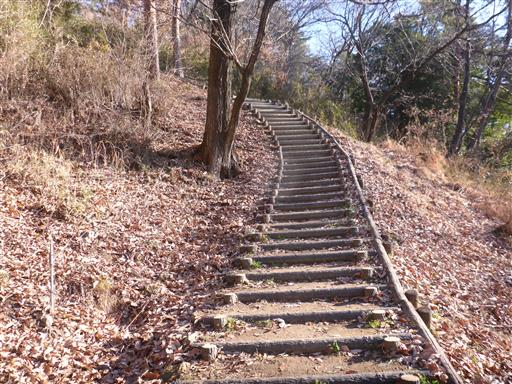
一登りすると駐車場に到着。ここまで車で来れるようだ。
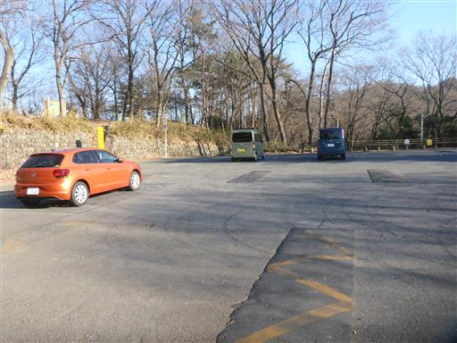
ここにはトイレ兼展望台がある。
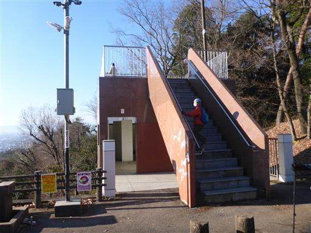
展望台からの景色。太田市街が見渡せる。
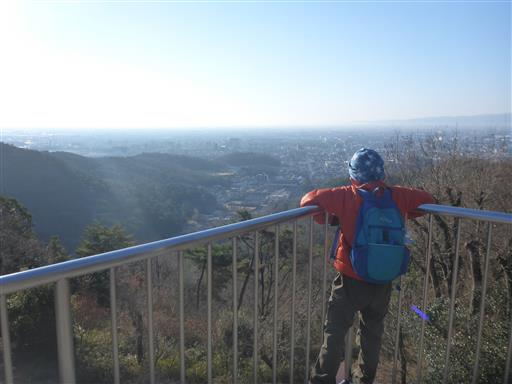
展望台より駐車場からの方が展望は大きく広がる。
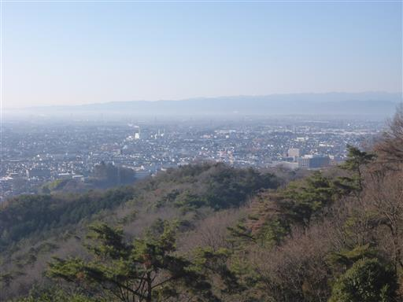
奥に小さく見えているのは富士山だ。
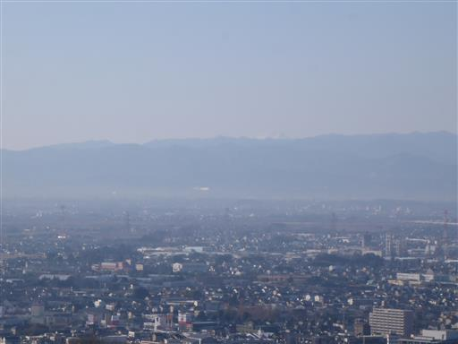
展望台を後にする。
野球部の格好をした子供たちが大勢登ってくる。トレーニングだろうか？
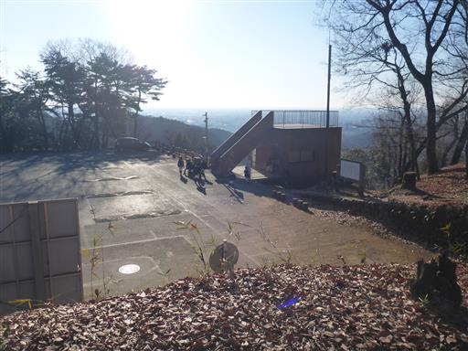
ここから先は金山城跡。この山には戦国時代に山城があったようだ。
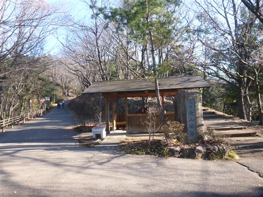
金山城跡マップ。結構立派な城だったようだ。
関東にある山城で石垣があるのは極めて珍しいらしい。
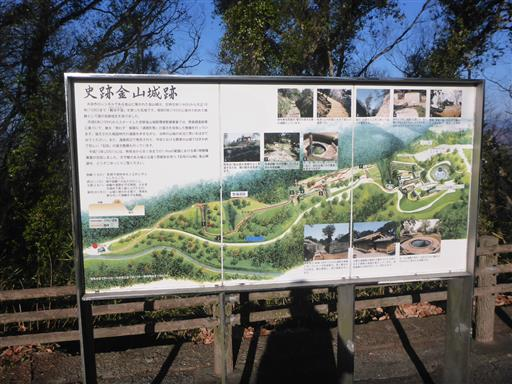
西方の展望が広がる。白く見えているのは浅間山だろう。
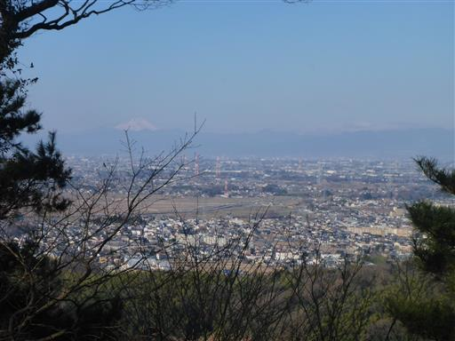
堀切。尾根を切って溝を作り、敵の侵入を防ぐ施設だ。
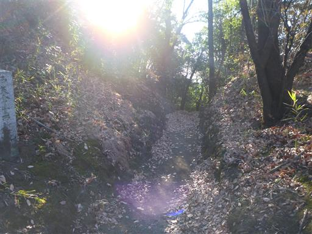
虎口。城への出入り口だ。この辺りの石垣は復元されたものだろう。
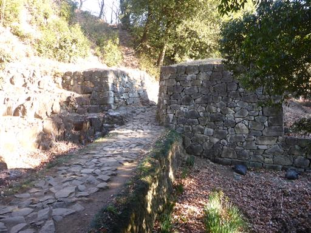
物見台。
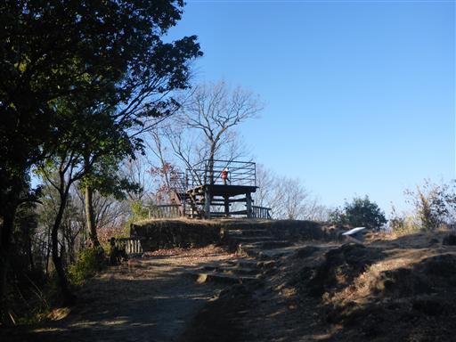
ここからも素晴らしい展望が広がる。真正面に見えるのは赤城山。
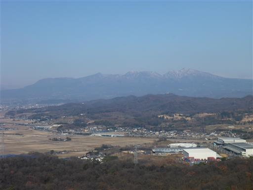
遠く男体山も見えている。
昔の人も見張りをしながら山々を眺めたのだろうか？
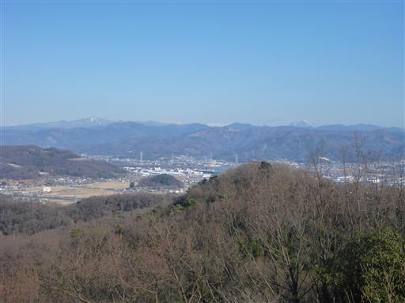
月ノ池。山の上なので、飲料水確保のためにあるのだろう。
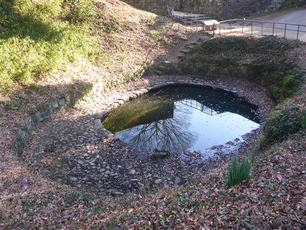
大手虎口に到着。かなり大規模な施設で、難攻不落の城だったようだ。
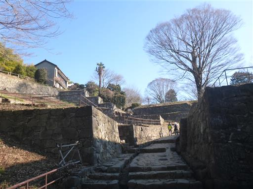
井戸を覗き込む。
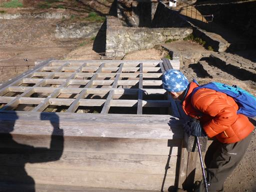
石垣は自然の斜面に沿って美しく積まれている。
この辺りも復元されいるものなのだろうか？
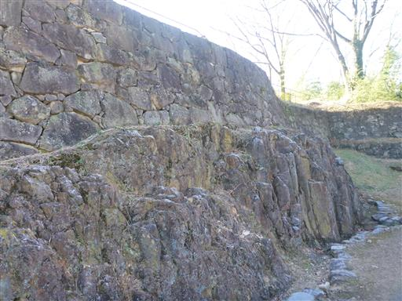
日ノ池。こちらは月ノ池よりだいぶ大きい。見事な円形の池だ。
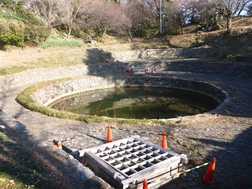
金山城の石碑。日本百名城に選ばれている。
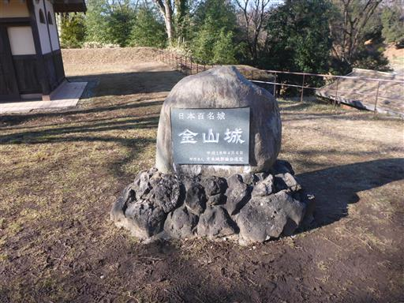
金山の大ケヤキ。推定樹齢800年の巨木だ。
城が建築されたときから、ここに存在していたのだろう。
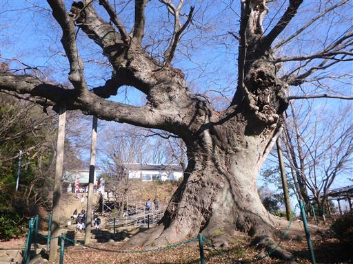
太田金山山頂に到着。標高236m。山頂標識はない。
かつて山頂には本丸があったが、今では新田神社になっている。
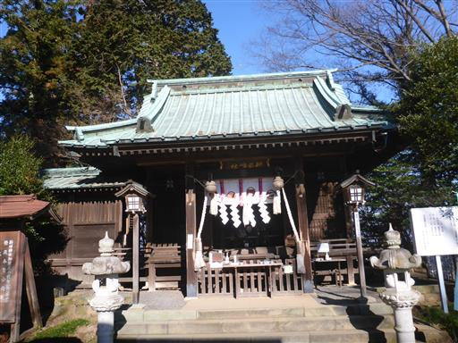
側にある稲荷神社。赤い鳥居が並んでいる。
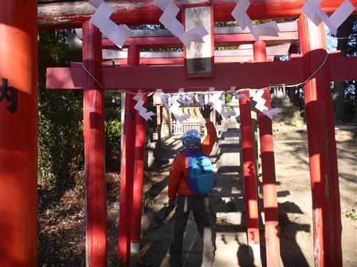
この設備は一体何だろう？
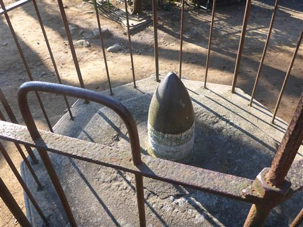
社務所で御守りを購入。剣や弓矢のおまもりがあったので話を聞いてみると、
この神社は鎌倉幕府を打倒した新田義貞を祭神として祀っているとのこと。
そのため、必勝祈願の神社として知る人ぞ知る場所らしい。
先ほどの野球少年たちはこの神社まで来ていたが、
トレーニングではなく新年の必勝祈願に来ていたのだろう。
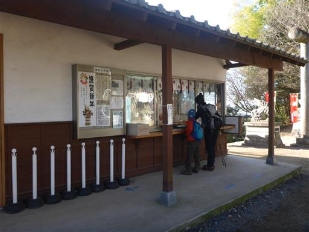
まだお昼には早いので、隣にある184mピークまで往復することにする。
山頂直下の一角には竹林が広がっている。
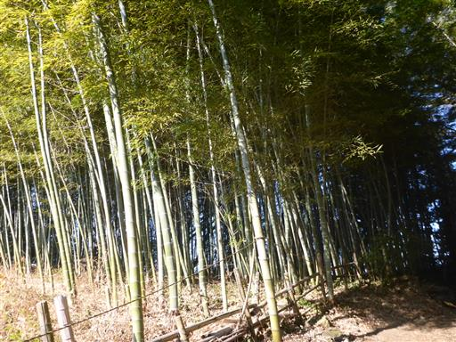
歩きやすい平坦な尾根道。こちらから登る人もいるようで、たまに人とすれ違う。
184mピークはただの道の途中で、展望も何も無いためすぐに引き返す。
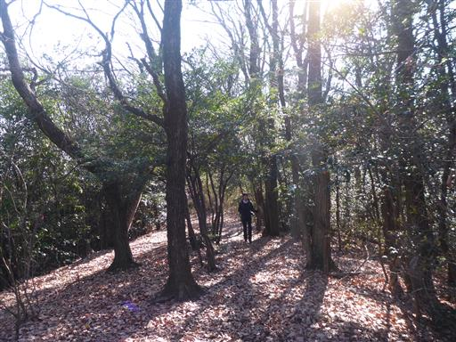
金山城直下まで戻ってきたら、山頂直下をぐるっと一周。
神社の裏側には往時の石垣がわずかながら残っている。
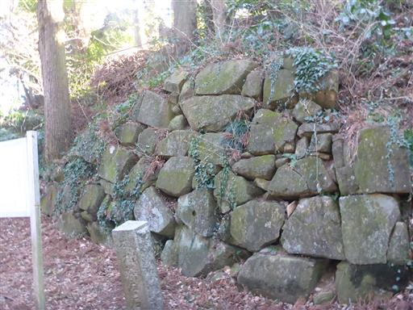
石垣が残っているのは一角のみ。
山頂直下をぐるっと一周して、表に戻る。
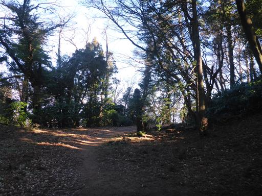
休憩所の外のベンチに腰掛けて昼食をとる。
気温が高く風もなく、まるで3月のような気候だ。
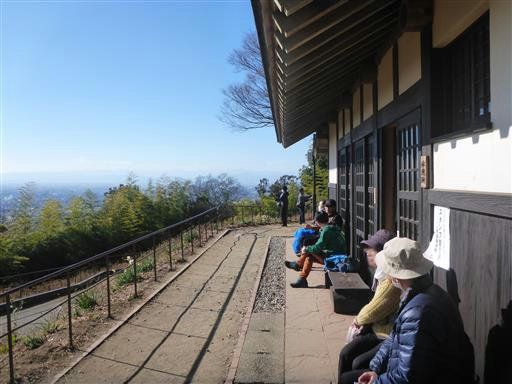
下山は別の尾根道を歩く。巨大な鳥居を潜る。
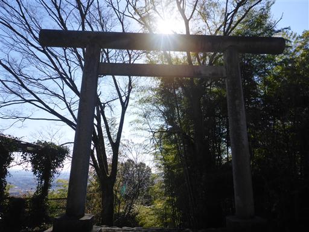
錆びたベンチ。何年前から放置されているのだろう？
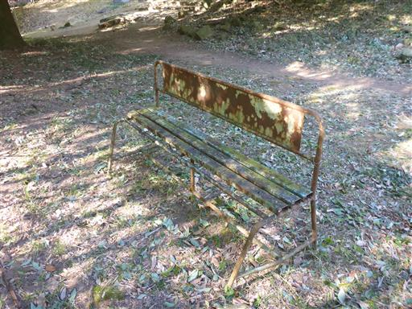
登りに使った道と異なり、こちらは登山道が続く。
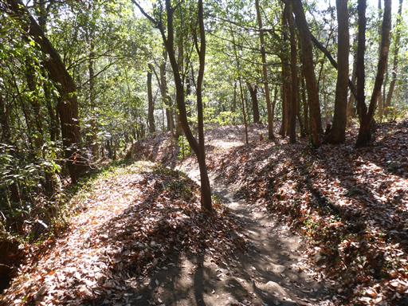
途中で車道とニアミス。登りで展望台のあった場所に続く車道だ。
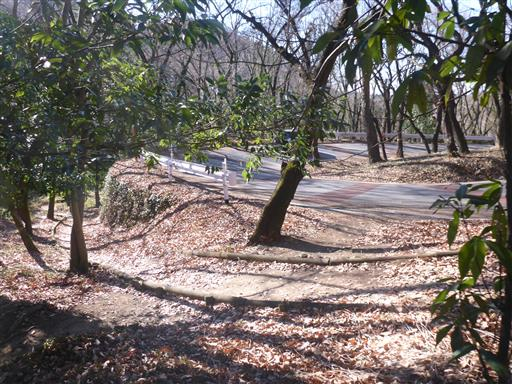
松風峠で車道を越える。少し湾曲していて美しい橋だ。
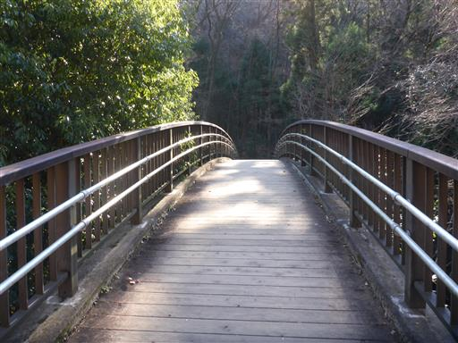
道路は遥か下方。
この山へのアクセスは下の道路を通っており、その時眺めた橋までやってきた。
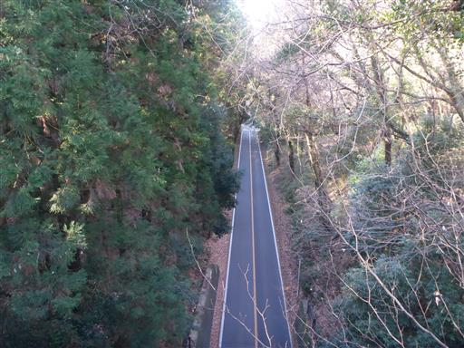
大八王子山を通過。標高184m。
その後、中八王子山、小八王子山と三山が続く。
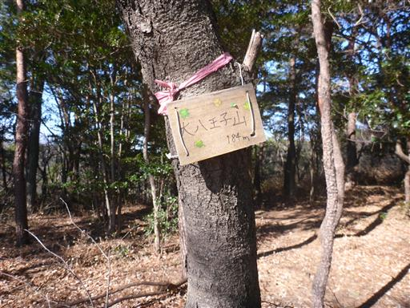
再び車道を横切る。
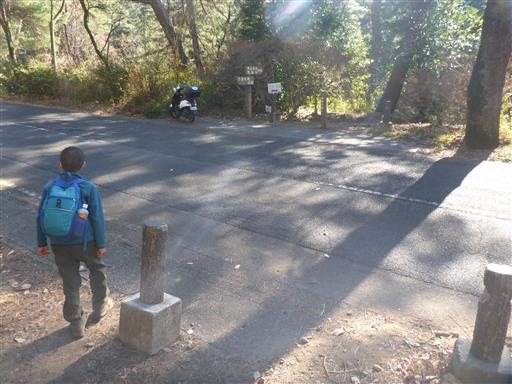
足元で鳥が盛んに地面を突っついている。ミミズを食べているようだ。
人が近づいてもあまり逃げない。
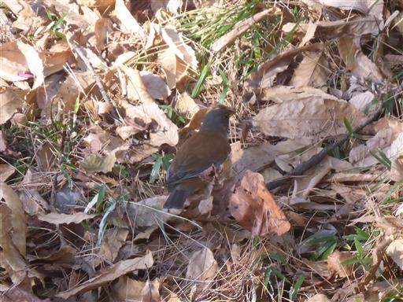
水芭蕉群生地に到着。
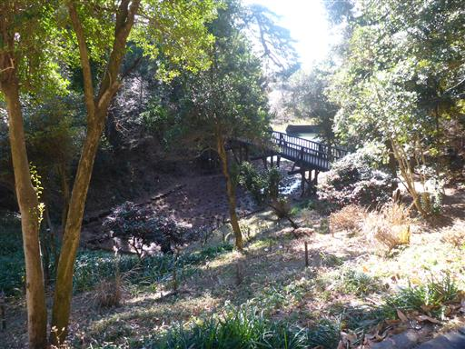
当然まだ水芭蕉は咲いていない。小さな芽が頭を出しているが、これが水芭蕉だろうか？
この辺りの道は分かれ道だらけで、地図とGPSが無いととても正しいルートを歩けない。
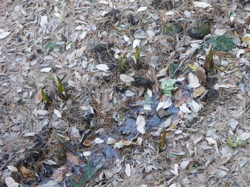
鮮やかなサザンカの花。
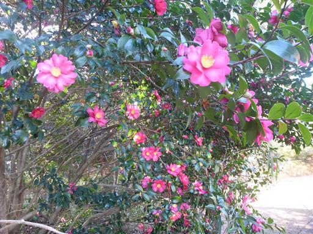
おそうじ小僧。マスクをつけている。
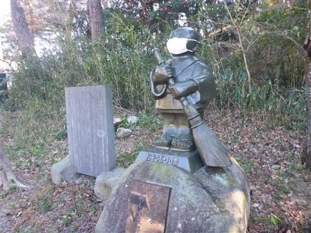
尾根の真ん中にあるベンチ。
下山が長いため息子の機嫌がものすごく悪く、休まずに通過する。
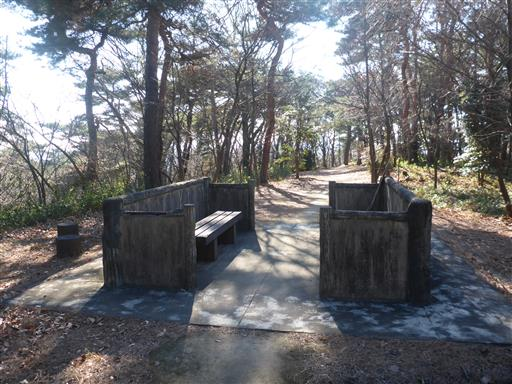
急な斜面はほとんど存在せず、整備された緩やかな登山道が続く。
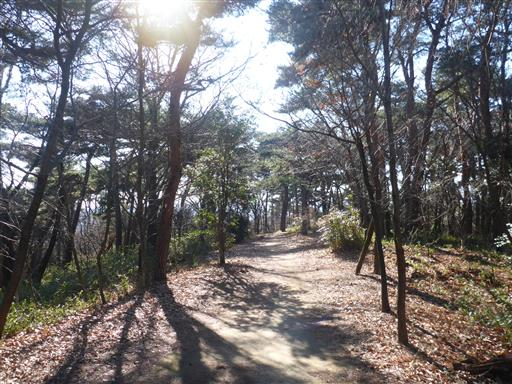
下山。下山地点にある受楽寺に立ち寄る。
息子の機嫌が悪いので10秒で参拝を済ませ退散。
あとは車道歩き。駐車場まで1km弱。
妻は下山途中から足が痛いらしく、ゆっくりしか歩けなくなってしまった。全員機嫌が悪い…
途中で和菓子屋を発見。焼きまんじゅうで人気の店のようだ。
息子が目ざとく見つけたため、立ち寄ることにする。
直前に大量購入した人がいたため結構待たされたが、息子は文句ひとつ言わない。現金なものだ。
妻は駐車場に先行。
焼きまんじゅうを食べて機嫌を取り戻した息子と大光院を見学。
立派な本堂。そこそこ参拝客も訪れている。参拝を済ませて駐車場に戻る。
太田金山は軽いハイキングで山城や神社、下山後の寺院巡りができ
それなりに展望スポットもあり、思ったよりも楽しめる山だった。